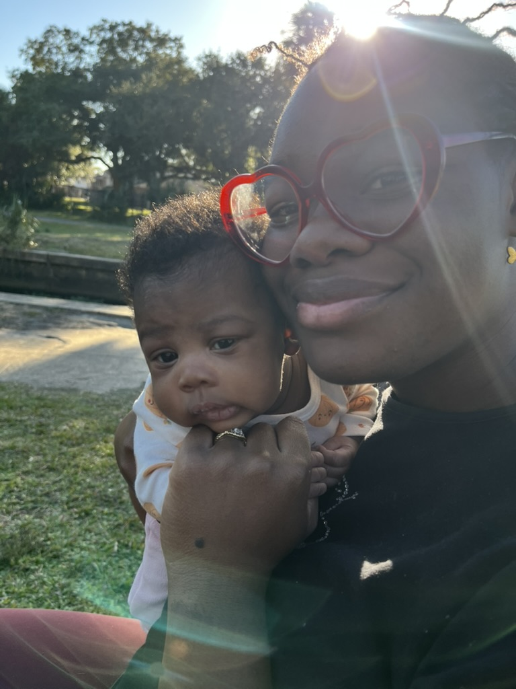

A mother of twins navigating new thoughts, new perspectives, and the weight of this beautiful season. I write honestly about holding it all at once.
✦ Latest Posts
Nap-time brain dumps, big feelings, and all the stuff that happens when nobody's watching.
✦ About Her
I'm a mother of twins, a former nurse, a weightlifter, and someone who's still figuring it out — honestly and out loud. This space is where I put the stuff that doesn't fit in a caption: the hard mornings, the quiet wins, the recipes that saved dinner, and the thoughts that keep me up at 3am.
I don't have it together. But I'm paying attention. And I think that counts for something.
"I just want to help — every chapter, every way."

✦ From the Kitchen
No fancy equipment. No hour-long prep. Just real food that people actually eat.
✦ Life Snippets
Not everything needs 800 words. Sometimes it's just a moment.
"The bar doesn't care about your bad day. Neither does your toddler. Both of them are teaching me the exact same thing right now."
— this week's 5am thoughtStarted my education coursework. Turns out small children and heavy barbells require identical energy reserves. I'm monitoring the situation.
— campus journalMade the soup three times this week. Nobody complained. That's a recipe post. It's officially a recipe post.
— kitchen notesSomeone asked what I do. "I'm raising a human" felt more accurate than anything I've ever put on a résumé — and I've put a lot of things on résumés.
— at a party, honestlyShe fell asleep holding my hand tonight. I forgot every single hard thing that happened today in about three seconds flat. Exactly three.
— bedtime, alwaysThe thread connecting underwriting → nursing → teaching → mom? I just want to help people. Took me decades and a baby to see that was the whole point all along.
— on reflection